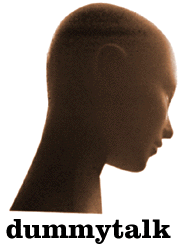

|
 |
|
Joan is a polystyrene mannequin located in the Gottfolk reception area. She is a certified therapsist and gained the title "Mannequin Advisor of the Stars" by counseling the likes of Willie Nelson, Carol Channing and Barbara Bach. If you are in need of advice, feel free to drop her a line. |
"TENDER VITTLES AND WD-40"
|
dummy: My girlfriend loves animals. She's a very nurturing person and will come to the aid of any animal in need. When she found her current dog Puddles, he had psoriasis. She nursed him back to health an they've been inseperable since. That was several years back and Puddles is starting to show signs of age. I'm worried that when his number's up, she'll be devastated. How can I help in bracing her for Puddles' demise? Also, I wanted to make him into a robot when he dies, can I? Sincerely, Zach Dear Zach, Sometimes the answer's right in front of you. You make this dog into a robot, and your girlfriend gets a pet that will outlive her. Heck, Charles Nelson Riley did it. Joan hey joan, I've successfully converted several of my pets into robots. Lately the thrill of simply mechanising deceased animals has worn off. Last week I gave a dog a strobe light for a head. It seems fine, but my friends tell me I've gone too far. How so? Kenneth, Dear Kenneth, Your friends are probably referring to an error that my friend Jack Lord made when he tried give a pet canary a pencil-sharpener head; they always have to be near an electrical outlet. Joan Dear Dummy, I think my cat Kato may be a robot. How can I check? love forever, Jen Dear Jen, There's only one way of testing whether or not Kato is a robot. Coax her with a wadded up piece toilet paper that's been soaked in luke-warm bathwater. This seemingly inert gesture is the only way to awaken the deeply nested command in all robot pets that makes them speak with a lisp thereafter. It's bizarre, but it's the only thing that works. Joan |
| archives | main | chat |
* |
dummytalk | outings | little things |